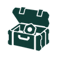

<!doctype html>
<html lang="en">
<head>
  <meta charset="utf-8">
  <meta name="referrer" content="no-referrer">
  <meta http-equiv="Content-Security-Policy" content="default-src 'self'; script-src 'self'; style-src 'self' 'unsafe-inline'; img-src 'self' https://arcraiders.wiki; connect-src 'none'; font-src 'none'; frame-src 'self'; object-src 'none'; base-uri 'none'; form-action 'none'">
  <meta name="viewport" content="width=device-width, initial-scale=1">
  <link rel="icon" href="favicon.png">
  <link rel="apple-touch-icon" href="apple-touch-icon.png">
  <meta name="description" content="Track ARC Raiders upgrade requirements and compare weapon builds.">
  <link rel="canonical" href="https://snowball-projects.github.io/raiderbro/">
  <title>raiderbro</title>
  <link rel="stylesheet" href="src/app-shell.css">
</head>
<body>
  <div class="app-shell">
    <aside class="shell-sidebar">
      <div class="shell-brand">
        
        <div class="brand-copy">
          <h1 class="brand-title">raiderbro</h1>
        </div>
      </div>

      <nav id="tool-nav" class="tool-nav" aria-label="raiderbro tools"></nav>
      <div class="shell-links"><a href="about.html">About &amp; sources</a><a href="https://snowball-projects.github.io/">snowball ↗</a></div>
      <noscript>Enable JavaScript to use the tracker and weapon comparison.</noscript>
    </aside>

    <main class="shell-workspace">
      <section class="workspace-stage">
        <iframe
          id="tool-frame"
          class="tool-frame"
          title="raiderbro tool"
          loading="eager"
          referrerpolicy="no-referrer"
        ></iframe>
      </section>
    </main>
  </div>

  <script src="src/app-shell.js"></script>
</body>
</html>
